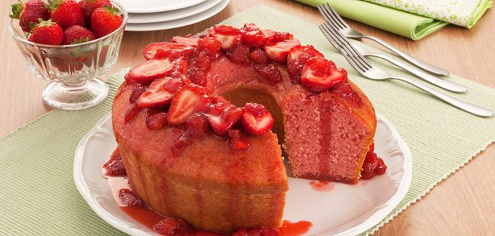

Praticando 3 - Receite de bolo com listas
Voltar ao Menu Principal
BOLO DE MORANGO

Ingredientes
- 1 xícara (chá) de água
- 1 xícara (chá) de Nesquick
- 4 colheres (sopa) de manteiga
- 3 ovos
- 1 e 1/2 xícaras (chá) de açúcar
- 3 xícaras (chá) de farinha de trigo
- 1 colher (sopa) de fermento em pó químico
- Manteiga e farinha de trigo para untar
- 10 morangos cortados ao meio para decorar
Cobertura
- 1 caixa de morangos picados (300g)
- 1 xícara (chá) de açúcar
- Suco de 1 limão
Modo de preparo
- No liquidificador, bata a água, o Nesquick®, a manteiga, os ovos e o açúcar até ficar homogêneo.
- Transfira para uma tigela, adicione a farinha e o fermento e misture com uma colher.
- Despeje em uma fôrma de buraco no meio de 30 cm de diâmetro untada e enfarinhada e leve ao forno médio, preaquecido, por 35 minutos ou até dourar. Retire e deixe esfriar.
- Desenforme o bolo, cubra com metade da cobertura, arrume os morangos cortados ao meio sobre o bolo e cubra com a cobertura restante.
Cobertura
Para a cobertura, em uma panela misture o morango, o açúcar e o suco de limão. Leve ao fogo baixo e deixe levantar fervura. Cozinhe por 5 minutos e deixe esfriar. Desenforme o bolo, cubra com metade da cobertura, arrume os morangos cortados ao meio sobre o bolo e cubra com a cobertura restante. Sirva em seguida.
Receita original: https://vovopalmirinha.com.br/bolo-de-morango/